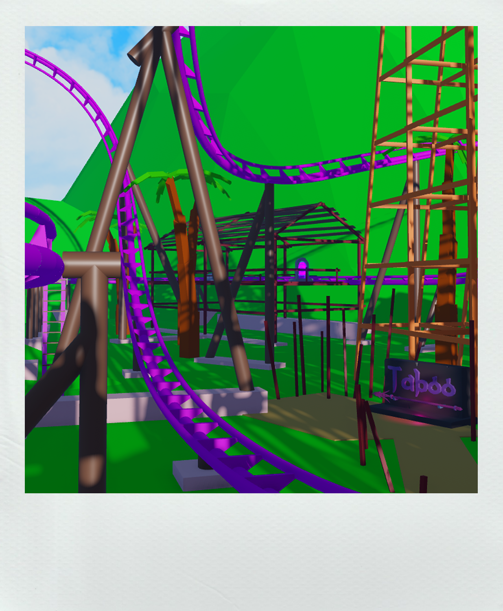

Synopsis
Summer break in 2009, you find yourself standing alone on what appears to be a deserted road, waiting for the bus. Your destination? A peculiar theme park situated high in the mountains. This park is known to be the best in the world, but it strikes you as odd that no one seems to remember how or when it came to be. It's as if it has always existed.
Rumors about a vanished ride, two missing people, and strange unexplainable sightings have haunted this amusement park's history for the past decade. Despite these persistent rumors, no one seems to believe in them.
However, you have a different plan in mind. You intend to investigate these mysteries and uncover the truth behind them.
Main Characters
Kana
She's a temp-hire working at The Theme Park, known for her quick-wit, intelligence, and love for coffee. As a roller coaster engineer, she's considered to be one of the best in the business.
Despite her professionalism, there seems to be something more that she's searching for at The Theme Park.
Perhaps it's the excitement of uncovering something new and unexpected, or maybe she's on a personal mission to discover a hidden truth about the park. Whatever the reason, her determination and expertise make her an invaluable asset to the park, and her passion for exploration continues to inspire those around her

Tim
Tim is the laid-back manager of the ride management team at the park. Known for his easy-going nature and approachable demeanor, he always puts his employees first.
While he can often be found in the meeting room, handling paperwork and ensuring everything runs smoothly, there's more to Tim than meets the eye. He possesses a wealth of knowledge about the park's history and inner workings, but he doesn't always let on about what he knows.
Perhaps it's his quiet confidence that allows him to remain level-headed in the face of challenges, or maybe he's just humble about his abilities. Whatever the reason, Tim's dedication to his job and his team make him an indispensable part of the park's operations.
Paul
Paul is a tired-looking park-goer who was once known for telling tall tales. Though his stories were often dismissed as mere fabrications, rumors persist that he carries a dark secret.
These days, Paul spends his time quietly at the local cafe. His once-energetic demeanor has been replaced by a sense of weariness, and he often seems lost in thought. Despite his apparent reluctance to share his thoughts and experiences, it's clear that something is weighing heavily on his mind.

William
William was a ride operator who went missing from the park 10 years ago. Despite an extensive investigation, he was never found.
The circumstances surrounding William's disappearance remain a mystery, and rumors about what might have happened to him continue to circulate among park employees and visitors alike. Some say that he simply wandered off and got lost in the dense forest that surrounds the park, while others believe that it was something more sinister.
Whatever the truth may be, William's disappearance has left a lasting impression on the park and those who knew him. His absence is felt to this day, and his story serves as a cautionary tale for all who work and visit the park.
Roller Coasters
Theme Park Project boasts an array of exhilarating virtual roller coasters that are sure to leave players on the edge of their seats. As they ride these coasters, players can accumulate a ridescore, which keeps track of the number of rides they've taken. The higher the ridescore, the greater the rewards, including in-game prizes, and the opportunity to compete for a top spot on the leaderboard.
Cliff Diver
Perched atop a towering canyon, Cliff Diver reigns as the park's tallest roller coaster, boasting a vertigo-inducing steep drop. Riders will experience an adrenaline-fueled rush as they hurtle down the coaster's first drop, descending a waterfall and into two consecutive inversions.

Hurricane
Hurricane is an exceedingly rare prototype coaster that is truly ahead of its time. The coaster's unique design provides a smooth and safe ride, allowing riders to fully experience the thrills of the coaster without any discomfort or fear. But what sets Hurricane apart from other coasters is its intensity. The sudden transitions and quick pacing create an adrenaline-fueled ride that will leave even the most experienced coaster enthusiasts breathless.

Taboo
Taboo is a launch roller coaster that surrounds the resort's parking lot and spans the Central Area and Beachside District. The coaster launches riders up and over the resort building before plummeting them down into the jungle below, providing a thrilling ride experience with stunning views. With its unique launch system and high inversion, Taboo is a must-ride for coaster enthusiasts visiting the resort.

Wyvern
Wyvern is an inverted coaster that takes riders on a thrilling journey through a castle on the outskirts of the park. The coaster is well-known for its nine inversions, which provide a heart-pumping ride experience that is sure to leave riders breathless.
But what sets Wyvern apart from other coasters is its history. Rumor has it that the coaster was built exceedingly fast due to the sudden disappearance of another ride. Despite the mysterious circumstances surrounding its construction, Wyvern has become a fan favorite among coaster enthusiasts.

Unlockable Rides
Some of the most exciting roller coasters aren't accessible right from the start. As players progress through the story and increase their ride score, they'll unlock new areas and gain access to even more exciting coasters. With so much to explore and discover, Theme Park Project offers a truly unique and engaging gaming experience for coaster enthusiasts and gamers alike.

More Than a Theme Park
Theme Park Project offers a vast and imaginative world, featuring a dynamic day/night cycle and interactive NPCs that bring the park to life. With a plethora of items to collect, competitive leaderboards to climb, and a captivating 3-chapter story uncovering the mysterious secrets of the park. There's never a dull moment.
Players can also fish with friends and enjoy the many unique attractions. Immerse yourself in the rich lore of Theme Park Project, which includes its own books, and make your mark with customizable titles and player owned housing. With hours of gameplay, each visit to the park is sure to leave players with something new to discover.
Explore
Embark on an epic journey through the world of Theme Park Project, filled with an array of zones and locations just waiting to be explored. Whether you're searching for hidden secrets or simply seeking to relax, this adventure-packed game has something for everyone.

Your Own Home
Create your dream living space in the game! Customize everything from the walls to the floors and furniture, you can truly make it your own.
Earn upgrades by paying off your debts and transform your humble abode into a coveted mansion. Let your creativity run wild and design the perfect home for your virtual adventures!

Customize
Choose from a wide range of unique titles to customize your character and stand out from the crowd. Not only that, but you can also switch up your in-game deployable rest chair to relax in style and comfort.
With a plethora of customization options available, Theme Park Project offers endless possibilities to express yourself and play the game your way.
Deliver
Deliver important letters to the park's visitors while exploring the vast surroundings.
Whether you're a casual player or a dedicated completionist, the postman job is a unique and exciting way to earn in-game currency and become a part of the park's community.
Repair
Ascend to new heights as you scale towering attractions to keep them in top condition. Traverse catwalks and ladders to repair and maintain roller coasters, ferris wheels, and other thrilling rides.
Earning in-game currency with each successful repair, you'll ensure the park remains a safe and exciting destination for all visitors.

Clean
Theme Park Project is under attack by a mysterious vandal known only as 'The Painter.' Take matters into your own hands and fight back against their graffiti by cleaning up the park and restoring it to its glory.
Not only will you be saving the park, but you'll also earn valuable in-game currency for your efforts.